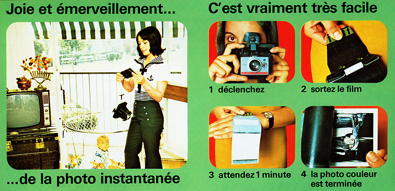

Le dépôt de bilan annoncé de Kodak en 2012 marque la fin d’un long déclin d’une icône de l’industrie américaine. Victime du développement de la photo numérique, Kodak n’aura pas réussi à se reconvertir à partir de son métier de chimiste. Un exemple classique d’une entreprise leader dans son domaine (la photo argentique) qui meurt, incapable de tirer partie d’une nouvelle technologie.
La réalité est plus nuancée. Kodak est en fait un des tous premiers à avoir activement travaillé à la photo numérique. En 1992, l'appareil photo numérique, le Kodak DCS 100, coûtait 220.000F (environ 50K Euros aujourd’hui!). On ne peut pas dire que Kodak ignorait la révolution numérique ! Au contraire, Kodak était très active dans le domaine et est à l’origine de très nombreux brevets, qui d’ailleurs constituent aujourd’hui la dernière source de valeur de l’entreprise. L’entreprise n’a pas démérité non plus dans le domaine des appareils photo numériques où elle tenait encore récemment une place honorable. Alors d’où est venu le problème ?
Kodak n’a pas raté la révolution numérique, mais elle a été victime du très classique dilemme de l’innovateur, décrit par le chercheur Clayton Christensen. Ce dilemme explique l’échec de l’innovation de rupture en termes de modèle d’affaire. Parfaitement au courant du développement du numérique, puisqu’elle en était l’instigateur, Kodak n’a pas voulu le promouvoir de manière déterminée pour une raison simple: protéger son activité principale de l’époque, la vente de films argentiques. La meilleure preuve est que l’entreprise a d’abord essayé de forcer le numérique dans le moule traditionnel, en inventant le film numérique (le pathétique APS). Forcer l’innovation de rupture dans le moule de l’activité traditionnelle est une réaction classique de « bourrage » (cramming en anglais). Le résultat est l’étouffement.
Autre réaction: alors que le déclin de l’argentique était engagé, Kodak a décidé de résister et a augmenté ses budgets de promotion pour résister à son grand concurrent de l’époque (par exemple aux jeux olympiques de Sidney en 2000), Fuji. A l’époque, l’indicateur principal de performance était la part de marché dans le duopole mondial, et toute perte même minime était inenvisageable pour Kodak, car cela aurait entraîné une chute brutale en bourse, ce que le PDG ne pouvait se permettre. Ainsi donc, l’activité traditionnelle continuait à recevoir la majorité des ressources de l’entreprise, alors même que cette dernière « savait » qu’elle était condamnée.
L’exemple de Kodak montre donc qu’une entreprise meurt non pas d’avoir ignoré une innovation de rupture (c’est rarement le cas) mais d’avoir été empêchée d’agir pour la développer, malgré sa bonne volonté et la conscience du danger, en raison même du succès de son activité dominante. L’échec de l’innovation de rupture résulte donc d’un conflit de modèle d’affaire entre l’ancien et le nouveau. L’entreprise est prisonnière de son modèle d’affaire. Comme l’indique Christensen, le modèle d’affaire détermine les opportunités que nous trouvons attrayantes, et celles que nous trouvons non attrayante. En l’occurrence, le modèle d’affaire de Kodak rendait la photo numérique non attrayante.
Innovation n'est rien sans vision…
L’ancien est certes condamné, mais il fournit à l’entreprise la majorité de ses ressources et ne peut donc être ignoré; le nouveau représente l’avenir, mais il ne fournit encore que peu de ressources et n’obtient donc pas de voix au chapitre. En réunion budgétaire pour l’allocation de ressource, il n’a aucune chance. Au final, la capacité à innover se ramène donc à disposer d’un mécanisme d’allocation de ressources capable de protéger les innovations de ruptures, c’est à dire de permettre à l’entreprise de gérer deux modèles d’affaires, l’ancien et le nouveau.
On ne peut donc pas dire que Kodak ne vit pas le numérique venir. Non seulement il fut l'inventeur de cette innovation de rupture mais il en fut également un acteur extrêmement prolixe en matière d'inventions. Sur les près de 20 000 brevets que la marque déposa, plus de 1 000 étaient centrés sur la technologie numérique. Comble de l'ironie, ils furent vendus fin 2012 pour 525 millions de dollars à un consortium composé d'Amazon, Apple, Google, Facebook, Microsoft, Samsung…
" Dans un bateau qui navigue à contre-courant, qui n'avance pas recule. "
Moralité : ce n'est donc pas le numérique qui tua Kodak mais son incapacité à se transformer dans un monde qui va de plus en plus vite et où, à peine sortie, une innovation peut déjà être obsolète, chassée par celle qui prendra sa place.